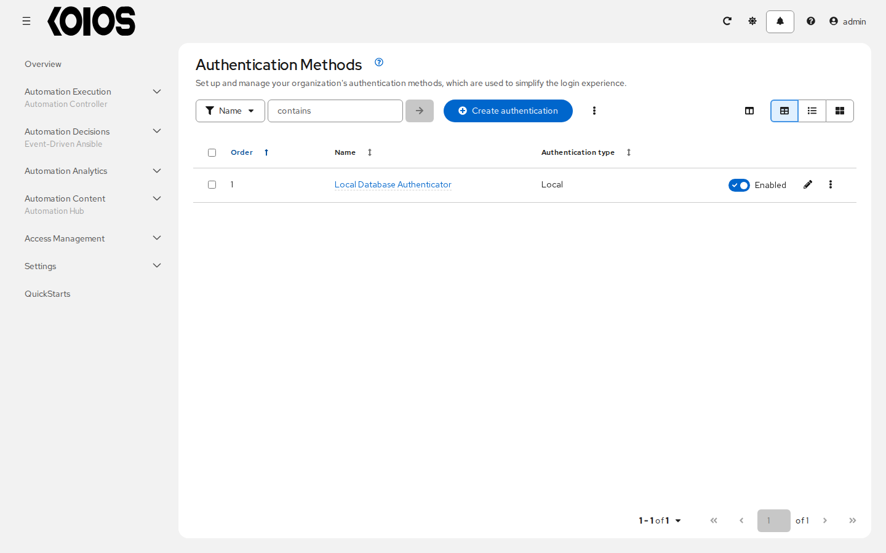
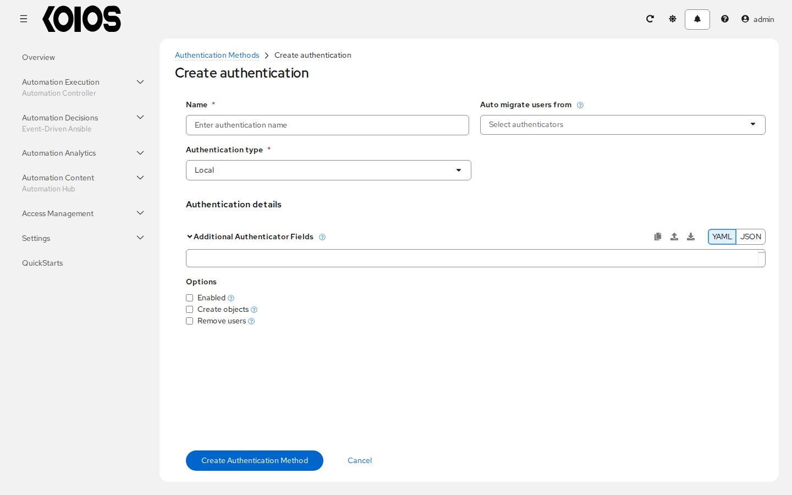

Authentication methods
An authentication method (an authenticator, in the API) is a source the gateway accepts users from. Every platform starts with one, Local Database Authenticator, which checks the users and passwords stored in the platform. You can add as many others as you need, of these types:
Type |
Category |
Login |
|---|---|---|
Local |
password |
Username and password, checked against the platform database. |
LDAP |
password |
Username and password, checked against an LDAP directory. |
Radius |
password |
Username and password, checked against a RADIUS server. |
TACACS+ |
password |
Username and password, checked against a TACACS+ server. |
SAML |
SSO |
A button on the login page that redirects to the identity provider. |
Generic OIDC |
SSO |
A button that redirects to an OpenID Connect provider. |
Keycloak |
SSO |
A button that redirects to a Keycloak realm. |
Azure AD |
SSO |
A button that redirects to Microsoft Entra ID (Azure Active Directory). |
Google OAuth |
SSO |
A button that redirects to Google. |
GitHub, GitHub organization, GitHub team |
SSO |
A button that redirects to github.com; the organization and team variants only accept their members. |
GitHub enterprise, GitHub enterprise organization, GitHub enterprise team |
SSO |
The same, for GitHub Enterprise Server. |
The settings of each type are described in Authentication providers.
Creating an authentication method

Go to Access Management > Authentication Methods and click Create authentication.
Choose the Authentication type and give it a Name. The name is what users see on the login button of an SSO method.
Fill in the settings of the type. Fields left empty take the defaults shown in the form.
Turn on Enabled when the method is ready to be offered at login; it is off by default.
Click Create Authentication Method.
If users from this source need more than to log in, open the method, go to Mappings and add mapping rules with Create mapping.

The options of every method are:
Enabled : Whether the method is offered at login. Disabling a method keeps its users, but they cannot log in through it until it is enabled again.
Create objects : Whether a login can create the organizations and teams its mapping rules name. When it is off, rules that name an organization or team that does not exist are skipped.
Remove users : Whether each login takes away the platform roles that the mapping rules do not grant: platform auditor, and organization and team membership or administration. This includes roles given by hand. The superuser flag is not affected: it only changes through a Superuser rule. Roles inside a service, such as the admin role of a job template, are not affected. Turn it off if you grant organization or team roles by hand to users of this method.
Auto migrate users from : Other methods whose users move to this one: when a user of one of them logs in through this method, the gateway moves the account here, with its history and permissions. Use it when you replace a provider. Users are matched by their identifier in each provider.
The login page
Password methods share the username and password form of the login page; SSO methods each add a button. When a user submits a username and password, the gateway tries the enabled password methods in their order, lowest first, and stops at the first that accepts them. Change it with Manage authentication order in the list of authentication methods.
The first time someone logs in through a method other than the local database, the gateway looks for the platform user they belong to:
if the provider gives an email address that exactly one platform user has, the login joins that user, whatever method it came from;
if more than one user has that address, the login is refused;
otherwise, a new user is created, named after the username the provider gives, with a suffix if that name is taken.
Because a matching email address is enough to join an existing account, only add providers whose email addresses you trust, and do not let users choose the address a provider reports.
The local administrator
The admin user created at installation belongs to the local database. Keep the Local Database
Authenticator enabled, or keep at least one superuser that logs in through another method, so you
cannot lock yourself out. The password of admin is in the Secret <platform>-admin-password
(see First login).
API
The same operations are available at /api/gateway/v1/authenticators/. The types and the settings
each one takes are listed at /api/gateway/v1/authenticator_plugins/.